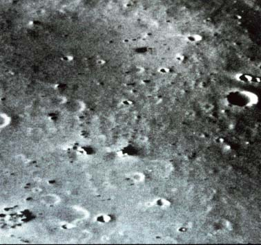
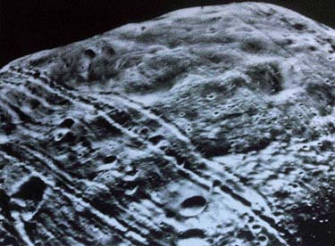

Deimos

Phobos
|
The small rocky moons of Mars, Deimos and Phobos, are irregular in shape and comparable in size to the asteroid Gaspra. The three objects are shown at the same scale and almost the same lighting conditions in the image below. All three bodies have irregular shapes, testament to their violent histories. Their surfaces are distinctly different, most likely because of very different impact histories. The Gaspra image was taken by the Galileo spacecraft on October 29, 1991 and the images of Deimos and Phobos were taken by Viking Orbiter in 1977.
All the images are NASA images, with the composite below built up from individual images from the NASA websites.
|